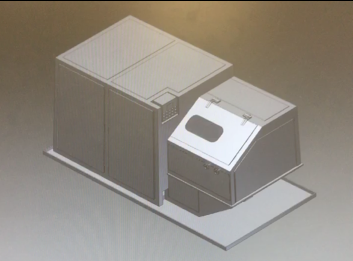

Festés
Az évek során sok mindenből merítettem inspirációt...
-Enrique Ringa-
-Luke Schroeder-
ig: @saint_trvth
és ezek által megihletve én is alkottam...
Rajzolás
Külföldi útjaim során sok street art nagy hatással volt rám...
illetve a barátaim és kedvenc alkotóim munkái is inspiráltak...
-Kovács Anna-
-Tyler Okonma/
Tyler, The Creator-
-Spencer McMullen-
és ezek alapján ezekre jutottam...
Műszaki
Ezek mellett már egészen kiskorom óta mindig is érdekelt, hogy mi hogyan működhet. 2019 nyarán pedig a Schaeffler-nél gyakornokoskodhattam...
először csak egy-egy területet kellett vázolnom...
majd egy-egy présgépet vagy konzolt...

három héttel később pedig már munkavédelmi burkolatokat és a hozzátartozó konzolokat terveztem, amit a cég 3D nyomtatójával meg is valósítottunk.